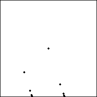

| Addresses The limiting points in the
last example have addresses (12)∞
and (21)∞. To see
this, recall the relation between the address and the order in which the transformations
are applied. The sequence 121212... gives points in regions with addresses |
| 1 |
| 21 |
| 121 |
| 2121 |
| 12121 |
| 212121 |
| and so on. |
|
|  |
| Click the picture for an animation |
|
|
| Alternate entries in the sequence are |
| 1 |
| 121 |
| 12121 |
| 1212121 |
| ... |
| (12)∞ |
|
 |
| 21 |
| 2121 |
| 212121 |
| 21212121 |
| ... |
| (21)∞ |
|
|